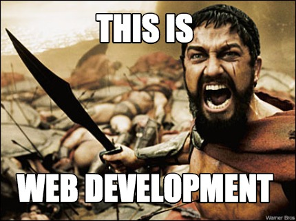

About Me
 My name is Onik Ter-tatevossian. I was born on January 10, 1992 in Hollywood. I lived in Hollywood with my family until when I was nine years old. From there my family moved to Granada Hills and have been there ever since. After graduating High school I went into real estate. I worked as a realtor for about four years but always found myself reading about computer programming. I decided to switch careers and become a web developer and computer programmer.
Other than studying computer programming I also spend time doing my hobbies. I currently practice boxing and attend a boxing gym regularly. If I'm not boxing then I usually like to modify my car. But thats pretty much it about me.
Connect With Me